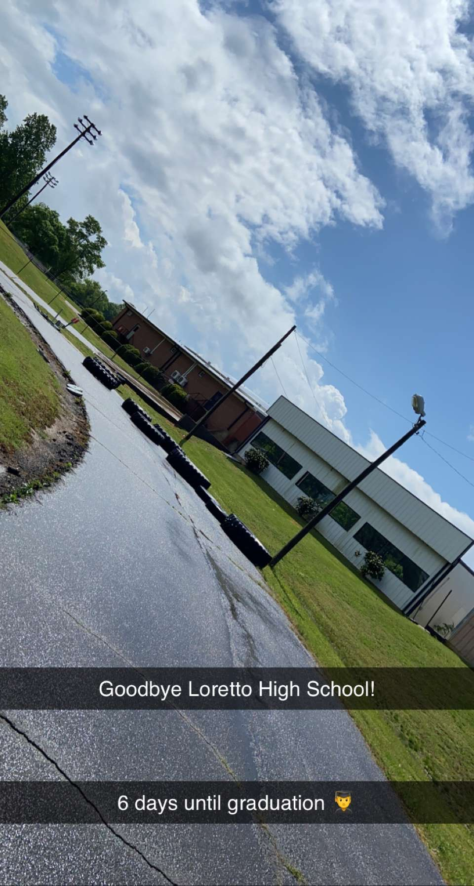

Loretto High School

My Alma Mater and a defining piece of my home. I spent hundreds of hours in this school learning, making friends, and defining my future.
Loretto High School has supplied me with knowledge and skills that have made me a more thourough and committed person. I believe this school has given me drive to make me be the best I can possibly be.
Leoma

I have always lived in Leoma. I went to elementary school here, went to church here, and have learned many life lessons here.
A rural unincorporated community, Leoma has shown me many examples of burnout and defeated adults. As sad as it may be, it has pushed me to go beyond the community.
But between the world-worn adults, the community has taught me many life lessons and has defined itself as part of my home.
Location of Lawrence County

Last Day of School
Lawrenceburg

More commonly known by everyone in the area as "Town", Lawrenceburg was my first "big" city. Loretto was small and Leoma was even smaller, so the highway town with it's 5 Mexican resturaunts has been a monumental place in my life.
I have spent countless hours in Crockett Park in Lawrenceburg learning about nature and getaways. I also learned to code in Lawrenceburg, sparking my dreams of being a Computer Scientist.
As boring as Lawrenceburg may seem to outsiders, it played a central role in my upbringing.
Loretto

In my mind, there are 5 things in Loretto: A High School, A Catholic Church, A Sonic, A Hardees, and A Burger King
That does not seem like much, but the High School makes up for the lack of anything else.